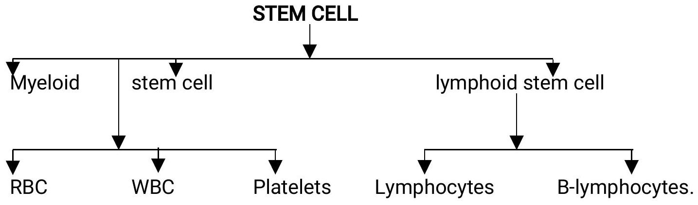

BLOOD DISORDERS
- Blood biology
- Anaemia
- Bleeding disorders
- WBC disorders
- Leukaemia
- Blood transfusion.
- Plasma cell disorders
- Lymphomas
BLOOD BIOLOGY.
DEF: Blood is a combination of liquid, cells and cell like particles that goes through the arteries, capillaries and veins - delivering oxygen and other essential nutrients to tissues and carrying away carbon dioxide and other wastes from tissues.
Blood production.
(i) In the bone marrow.
(ii) Reticuloendothelia system.
Liver and spleen during embryological development.
(iii) And during sickness.
Functions of blood.
Primary function.
(i) Transportation of various substances and
(ii) Exchange of materials in and out of tissues.
Secondary functions.
- Cellular metabolism.
- Homeostasis of fluid volume.
- Homeostasis of PH.
- Homestasis of body temperature and depends against micro-organisms.
Blood volume.
The average volume in a 70 kg in an adult male is around 5 litres.
Blood is composed of plasma and cells.
Plasma is the fluid portion of blood.
When plasma is allowed to clot the fluid part is called Serum.
It has the same components as plasma except the clotting factors.
Cells contain 45% of the total blood volume.
Plasma contains 55% of the total blood volume.
Blood cells.
- Red blood cells are erythrocytes.
- White blood cells are leucocytes.
- Platelets are the thrombocytes.
1. ERYTHROCYTES. (RED BLOOD CELLS)
- Are the most numerous.
- The mature RBC have no nucleus.
- They are biconcave in shape.
- Do not contain organelles like ribosomes and mitochondria.
- In males they are 5.5 million $\mathrm{mm} /$ cube.
- In females they are 4.8 million $\mathrm{mm} /$ cube.
- In diameter 8 UM (Micrometer).
Is so flexible that can pass easily through the capillaries as small as 2.8 um in diameter. Anaemia can be classified according to their sizes, microcytic, normocytic and microcytic.
Production.
They are produced in the bone marrow i.e. ribs, sterum, pelvis. The adult bone marrow produces 175 billion encythrocytes 70 billion leukocytes and 175 billion thrombocytes daily.
Destruction.
Fragmentation occurs in the capillaries of the liver, spleen and bone marrow Life span is 120 days.
2. LEUKOCYTES. (WHITE BLOOD CELLS).
Are of five types either granular or non-granular.
Granular.
(a) Neutrophilis.
(b) Eosinophilis
(c) Basophilis
Non-granular.
(a) Lymphocytes.
(b) Monocytes.
Neutrophilis are most prevalent and defends the body against fungus and bacteria. Are $1^{\text {st }}$ to arrive at site of infection within one hour.
Eosinophilis kill parasites e.g. worm and other cancer cells.
Basophilis are elevated during allergic conditions.
Lymphocytes - T-Lymphocytes - cellular immunity - (delayed allergic reactions).
B - Lymphocytes - humoral immunity.
T- Lymphocytes derived from thymus.
B-Lymphocytes from bone marrow.
T-cells - During transplant and during destruction of tumor cells.
B-cells - differentiate into plasma cell, which produces antibodies called the Immunoglobulin's which normally destroy the foreign materials.
Monocytes are used in phagocytes. Produce the macrophages. Are 5% of total leukocytes.
Population of leukocytes 5-10 thousand mm/cube.
3. PLATELETES. (THROMBOCYTES).
Used for blood clotting or homeostasis.
Formed in bone marrow and spleen.
Lifespan is 10 days.
Amount 15-450 thousand/mm cube.
BLOOD PLASMA
$90 \%$ of plasma is water and $10 \%$ is plasma.
Proteins Albumins, fibrinogen, globulins.
Blood cells formation (Hematopoiesis)
Precursor of RBC are pro-ecythrocytes which differentiate into reticulocytes (immature RBC) which produces mature RBC.
Precursor of WBC is called Myeloblast which differentiate into myelocytes (Immature WBC) which gives rise to the granular WBC - Neutrophilis, Eosinophilis, and Basophile. Processor of platelets is megataryplasts which differentiate into megakaryocytes which gives rises to thrombocytes.
ANAEMIA.
Is a condition where the number of RBC or HB levels is below normal.
Causes.
- Excessive bleeding.
- Decreased production caused by iron deficiency, Vit Biz deficiency, Vitamin C deficiency, Follic acid deficiency and chronic illness.
- Increased destruction of Red Blood Cells caused by spleenomegally, mechanical damage of Red blood cells, autoimmune reactions, haemoglobin abnormalities, hereditary factors, G6PD deficiency, sickle cell diseases.
1. Anaemia due to excessive bleeding.
Is the most common cause of anaemia and there is haemodilution. Massive blood loss lead to hypotension and hypo-oxygenation.
Clinical features.
- Thirst.
- Fainting.
- Sweating
- Weak rapid pulse.
- Rapid breathing.
- Orthostatic hypotension.
- Shortness of breath (dyspnoea)
- Fatigue.
NB. Rapid loss of atleast $1 / 3$ of blood is fatal.
Management
- Stop the bleeders.
- Blood transfusion.
- Raise foot of the bed.
- Fluid replacement i.e. saline, ringers lactate etc.
- Give, ion and folates for chronic conditions.
- Give oxygen.
2. Anaemia caused by decreased Red blood cell production.
There is decrease in nutrients needed in ecythropoiesis.
Nutrients needed are iron, Vit B12 and folic acid ,Vit C, riboflavin, copper and erythropoietin.
(i) Iron Deficiency Anaemia.
Causes.
- Through blood loss.
- In infants and children dietary deficiency.
- Chronic loss e.g. Ca stomach, which cannot be adequately replaced by diet.
- Pregnant women as the fetus needs iron for growth.
Factors leading to decreased absorption of iron.
- Vegetable fibres.
- Foods with phosphates e.g. beans (always soak beans before cooking to remove phytate)
- Antacids reduces absorption of iron e.g. actals.
Clinical features.
- Fatigue.
- Shortness of breath.
- Activity intolerance.
- Pica
- Glossitis - tongue irritation. And very smooth.
- Koilonychias - spoon like deformity on the finger nails.
- Cheillosis - cracks at the sides of the mouth.
Diagnosis.
- Clinical manifestation.
- Lab investigation - (full hemogram)
- Bone marrow studies.(Biopsy)
NB: Vit $\mathrm{B}_{12}$ and folic acid deficiency all lead to megaloblastic anaemia.
In both cases the WBC and platelets are abnormally large.
(ii) VITAMIN $\mathrm{B}_{12}$ DEFICIENCY.
- Also called Pernicious Anaemia (Vit B12 is absorbed in the ileum (last part of small intestines.).
- Vit $\mathrm{B}_{12}$ must combine with intrinsic factors which are produced in the stomach for absorption to occur.
- Vit $\mathrm{B}_{12}$ is stored in the liver.
Causes of Vit B12 Deficiency.
- Lack of intrinsic factors (proteins produced in the stomach for specific functions).
- Certain diseases e.g. chrohns disease, abnormal bacterial growth which is not conducive.
- Surgery of the stomach and the ileum.
Clinical features.
- Night blindness.
- Sore tongue
- Weight loss.
- Darkened skin.
- Decreases intellectual activity.
- Nervous system pathology i.e. tingling, numbness of extremities.
Diagnosis.
- Full haemogram.
- Gastric analysis.
Management. (specific)
Replacement of Vit B12 i.e. by injection that is given of life.
Any other management for anaemia.
(iii) Folic acid deficiency anaemia.
It is caused by lack of folic acid. It also called megaloblastic anaemia.
Sources Folic acid
Dark green leafy vegetables, small sweet bananas.
Other causes.
- Epileptic drugs.
- Oval contraceptics.
- Alcohol affects folic acid metabolism thus its absorption is reduced.
- Hemodialysis.
Long term effects.
- Congenital abnormalities in pregnancy i.e congenital abnormality e.g. spinabifida, hydrocephalus.
- In infants it causes neurologic deficiencies.
- In adults it causes anaemia (folic acid anaemia)
Diagnosis
- Full haemogram.
- Clinical presentation/manifestation.
Management.
- Folic supplements.
- Replacement for life.
- Other management for anaemia.
(iv) Anaemia Caused by Chronic Disease.
Is due to suppression of RBC production in the bone marrow. It is also called Iron-Reutilization anaemia because iron stored in the bone marrow cannot be used by the developing red blood cells.
It is gradual and mild.
Clinical features.
Gradual anaemia attacks.
Management.
Blood transfusion.
Erythropoietin hormone - produced in the kidney and stimulates production of Red Blood cells.
3. INCREASED DESTRUCTION OF RED BLOOD CELLS.
The scavenger cells from the bone marrow, spleen and liver, detect and destroy the red blood cells and when the destruction exceeds production, hemolytic anaemia results. NB: It is very uncommon.
Factors leading to hemolytic anaemia.
- Spleenomegally
- Mechanical damage of RBC
- Auto Immune reaction.
- RBC abnormality.
- Hemoglobin abnormalities.
(i) Spleenomegally
It the enlargement of the spleen caused by many condition i.e. malaria, kalaazar etc The enlarged spleen traps and destroys the RBC and the more they are trapped the more the enlargement.
Its gradual and symptoms are very mild.
Management.
Treat the underlying cause of splenomegally.
(ii) Mechanical damage of RBC.
It leads to microangiopathic hemolytic anaemia.
Normally RBC should migrate without injuries, however some conditions such as aneurism(weakness of blood vessel and dilatation) leads to mechanical damage of the red blood cells.
Also extreme high blood pressure.
Diagnosis
Microscopy of the blood. (Check for damaged red blood cells).
Management.
Identify the cause and treat it.
(iii) Auto Immune Reactions.
This is the destruction of own red blood cells because it (body) identifies them as foreign body.
When it is directed at red blood cells it is called Auto Immune Hemolytic anaemia.
Classification of Auto Immune Hemolytic Anaemia.
Are of two types.
- Warm, antibody hemolytic anaemia
- Cold antibody hemolytic anaemia.
In warm antibody hemolytic anaemia the body develops auto antibody that reacts against red blood cells in high body temperatures.
Antibodies will coat the red blood cells and the red blood cells are destroyed by scavenger cells in spleen and bone marrow.
It's common in women than men and could lead to lymphoma, leukemia, connective tissue disease e.g. SLE or exposure to certain drugs like antihypertensive.
Symptoms of warm antibody hemolytic anaemia.
- Spleenomegally.
- Upper left abdominal tenderness.
- Other symptoms of severe anaemia.
Cold antibody hemolytic anaemia body reacts against red blood cells due to low temperatures.
Symptoms are mild but when exposed to cold they worsen.
Diagnosis.
Titre test - identification of antibodies.
MANAGEMENT
- Identity and treat the cause
- Use of corticosteroids and cytotoxic drugs
- Splenectomy
- Blood transfusion
- Other general management of anaemia
(iv) Hemoglobin abnormalities
Sickle cell disease
It's an inherited condition characterized by Sickle shaped red blood cells and chronic hemolytic anemia In sickle cell the red blood cell contain an abnormal form of hemoglobin that reduces the amount of oxygen in the cells causing them to become Cresent shaped or sickle shaped. The sickle shaped cell block and damage the spleen, kidney, bones and other organs. The deformed cells are fragile i.e. delicate and easy to break as they travel through the vessels leading to:-
- Severe anemia
- Mild jaundice
- Blocked blood flow
- Organ damage and death.
Clinical Features
- Severe pain
- Anaemia
- Jaundice (destruction of RBC and the liver cannot conjugate bilirubin)
Sickle cell crisis includes:-
- Severe pain
- Fever.
- Shortness of breath after exhaustion.
- Enlarged liver
- Cardiomegally of heart murmurs
- Poor circulation of blood especially to the ankle area thus poor healing of wounds
- Painful erection (priapism) especially for young men.
DIAGNOSIS
- Blood microscopy
- Physical presentation especially in times of crisis
- Electrophoresis (abnormal detection of HB).
Complications
- Severe anaemia
- Impotence
- Pulmonary hypertension
- Heart failure
- Renal failure
Prevention of sickle cell crisis
- Avoid strenuous exercise e.g high attitudes
- Avoid dehydration
- Early treatment of infections.
Management
- Blood transfusion
- I.V Rehydration -(dilution of clumpy blood).
- Strong analgesics like morphine
- Oxygen therapy
- Prophylactic antibiotics
- Lower body temperatures
- Bone marrow transplant
- Hydroxyurea reduces production of abnormal RBC
- Psychological counseling.
NURSING DIAGNOSIS IN ANEMIA
- Altered tissue perfusion related to inadequate oxygen capacity as evidenced by decreased HB and red cells.
- Activity intolerance related to impaired oxygenation as evidenced by patients' verbalization.
- Altered nutrition less than body requirements related to increased need for substances necessary for normal ecythropoiesis as evidenced by decreased iron in blood, decreased vit B12 etc
- Knowledge deficit related to health status of the patient, regarding treatment plan as evidence by patient verbalization.
- Risk of infection related to impaired immunity.
- Risks to injury related to compromised haematological status.